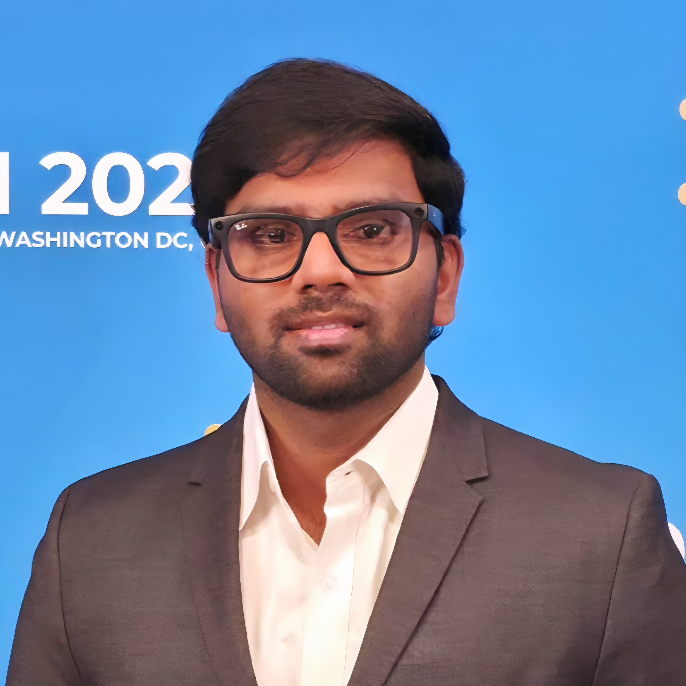

Translating complex data into reliable decisions with causally-informed machine learning.
I am a Ph.D. candidate in Computer Science at Arizona State University, working in the Knowledge Discovery and Data Mining (KDD) Lab under Dr. Yanjie Fu. My research focuses on improving the reliability and generalization of large language model (LLM) reasoning using causal inference and mechanistic interpretability, with an emphasis on invariant mechanism discovery, spurious correlation mitigation, and robust evaluation.
My work investigates whether LLMs encode causally invariant reasoning processes or rely on spurious correlations, combining interventional analysis, causal mediation, and mechanistic interpretability to understand and improve model behavior under distribution shifts.
Prior to my Ph.D., I completed my Master’s in Computer Science at Arizona State University and worked in industry as a Senior Software Engineer at Fidelity Investments and a Software Development Engineer at Amazon Alexa AI. My experience spans large-scale machine learning systems, probabilistic modeling, and production-grade decision pipelines.
I am currently a Doctoral Researcher at Dow Chemicals under the National Academy of Engineering (NAE) Frontiers of Engineering program, developing causal-aware, neuro-symbolic multi-agent reinforcement learning frameworks for AI-driven materials discovery and simulation.
Outside of research, I enjoy photography and teaching programming, particularly working with students interested in creative problem-solving and building systems from first principles.
Building AI systems that reason reliably — not just accurately.
Investigating whether LLMs encode causally invariant reasoning mechanisms or rely on spurious correlations. Developing causal mediation frameworks over intermediate tokens using activation patching and counterfactual inputs — identifying the sparse subset of tokens that act as stable causal mediators.
Designing causal graph learning frameworks for invariant modeling under distribution shift. Work spans causal disentanglement for privacy-preserving reprogramming, structural divergence for anomaly detection in cyber-physical systems, and incremental causal learning for streaming environments.
Building neurosymbolic, causally-aware multi-agent RL frameworks for automated feature engineering and materials discovery. Integrating causal structure with sequential decision-making to improve robustness under distribution shifts in industrial simulation environments.
Industry experience spanning AI research, ML systems, and software engineering.
Research collaboration under National Academy of Engineering (NAE) Frontiers of Engineering grant. Developing causal-aware multi-agent reinforcement learning frameworks for AI-driven material science simulations and advancing computational models for materials discovery and optimization.
Tech-lead for developing end-to-end retirement goal financial projections. Orchestrated project retirement goal savings framework based on Monte Carlo simulations. Developed ensemble outlier detection tools to determine factors impacting projected savings goals.
Implemented end-to-end voice (VUI) purchase flow for Skills requiring Parental Consents, enabling HIPAA compliance. Developed Purchase Likelihood Score model that drove the Alexa Purchase Recommender system, improving performance by 8% increase in Voice Skill purchases. Integrated localization module and designed voice-enabled promotional discounts for Alexa Skills.
Developed outlier prediction models for financial plans, school populations, and infrastructure. Designed end-to-end ETL pipelines and AWS Lambdas for data ingestion and analysis. Implemented prediction models to optimize school resources and analyze graduation rate factors.
Recent contributions to Causal ML, LLM Reasoning, and Data-centric AI research.
Open to research collaborations, internship opportunities, and academic discussions.
Whether you're interested in research collaboration, have questions about my work, or want to discuss opportunities — my inbox is always open.
Actively seeking Applied Scientist and ML Research Internship opportunities to apply my expertise in LLM reasoning reliability, causal ML, and mechanistic interpretability. Open to industry research labs and academic collaborations.